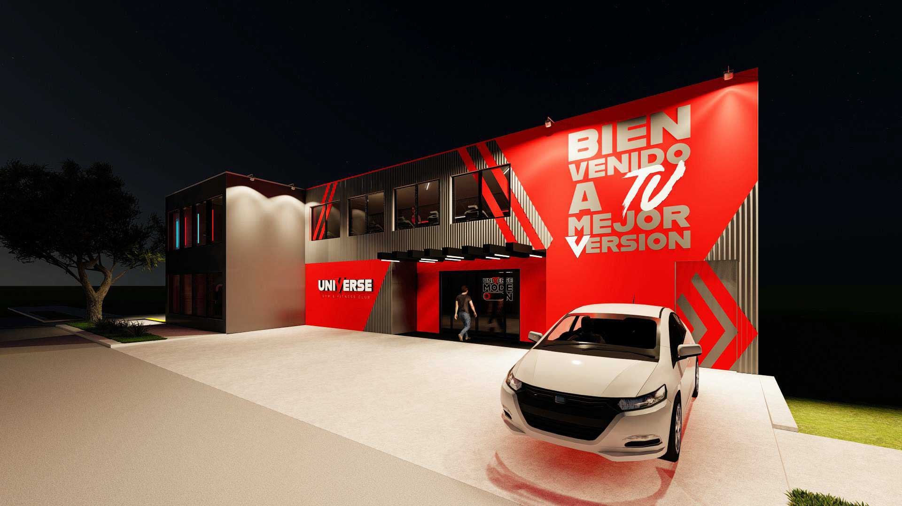

Dirección de marca
Universe
Un gimnasio convertido en una experiencia de marca.
Desarrollo de un sistema integral que conectó identidad, espacio y comunicación: del concepto de marca al levantamiento 3D, fachada, interiorismo, layout y comunicación en sitio, para transformar un gimnasio en un destino reconocible y con carácter propio.
- Aporta
- Convierte una propuesta de fitness en una experiencia coherente, memorable y útil para atraer comunidad, no solo en una serie de piezas visuales.
